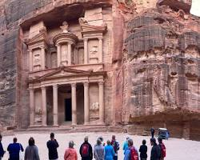
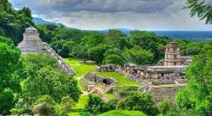
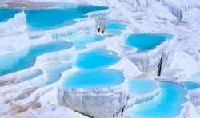
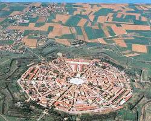

Petra
The "Rose-Red" city of the Nabataeans, famed for monumental architecture carved into Jordan's vibrant pinkish-red sandstone.
Explore JordanA curated journey through the star-shaped fortresses of Italy, the Maya jungles of Mexico, the white terraces of Turkey, and the red cliffs of Jordan.

The "Rose-Red" city of the Nabataeans, famed for monumental architecture carved into Jordan's vibrant pinkish-red sandstone.
Explore Jordan
A major Maya center in Mexico renowned for Pakal the Great's tomb and revolutionary vaulted ceiling designs.
Explore Mexico
Turkey's "Cotton Castle" pairs dazzling white travertine terraces with the Greco-Roman spa ruins of Hierapolis.
Explore Turkey
A Renaissance "Ideal City" in Italy designed as a strict nine-pointed star polygon to provide zero-blind-spot defense.
Explore Italy